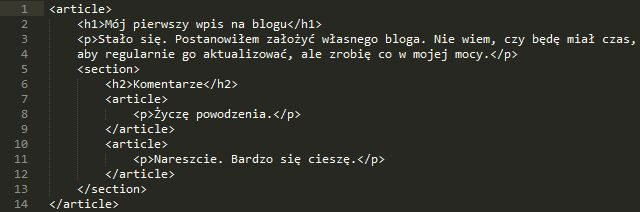

Sekcje strony
Header
Nagłowek dla naszej strony lub sekcji. Zazwyczaj zawiera w sobie znaczniki h1-h6, formularz wyszukiwania, nawigację czy logo. Nie ma ograniczeń co do ilości takich nagłówków.
Section
Tworzy sekcję dokumentu, czyli grupę z treścią, która różni się od innych treści zawartych na stronie. Powinna zawierać nagłówek.
Dobrym przykładem jest książka. Mamy tam rozdziały, które w HTMLu wyglądałyby właśnie jak sekcje.
Warto wiedzieć, że section nie używa się po to, żeby stworzyć coś na wzór diva, który po ostylowaniu będzie tylko pojemnikiem na inne elementy. W section musi istnieć zawartość, kóra w jakiś sposób wyróżnia się na tle strony, porusza inny temat, przedstawia coś innego - przykład z książką.
Dobrym przykładem jest książka. Mamy tam rozdziały, które w HTMLu wyglądałyby właśnie jak sekcje.
Warto wiedzieć, że section nie używa się po to, żeby stworzyć coś na wzór diva, który po ostylowaniu będzie tylko pojemnikiem na inne elementy. W section musi istnieć zawartość, kóra w jakiś sposób wyróżnia się na tle strony, porusza inny temat, przedstawia coś innego - przykład z książką.
Article
Do tagu article wrzucamy treść, która ma jakieś znaczenie i mogłaby być umieszczona na stronie bez względu na jej pozostałą treść. Oznacza to, że article jest dobrym miejscem na komentarz, treść posta na forum czy blogu lub treść newsa. Często zawiera nagłówek, który może znajdować się w elemencie header.

Nav
W tym znaczniku powinna znajdować się główna nawigacj naszej strony, czyli odnośniki pozwalające poruszać się po witrynie. Nie chodzi tutaj jednak o wszystkie linijki na stronie, a o te główne.
Przykładowe użycie: menu na stronie, spis treści, formularz wyszukiwania.
Przykładowe użycie: menu na stronie, spis treści, formularz wyszukiwania.
aside
W aside umieszczamy treść, która nie jest bezpośrednio związana z główną treścią strony, a jest dodatkiem - takie lekkie odbiegnięcie od tematu. Jeżeli tego dodatku by nie było, cała treść nadal miałaby swój sens i zachowała wartość.
Przykład: sidebar na stronie - mimo, że cała strona dotyczy jakiegoś tematu i każdy artykuł który się na niej znajduje traktuje o czymś innym, to sidebar zazwyczaj pozostaje taki sam na wszystkich podstronach, czyli w jakiś sposób "odchodzi w bok", jak mówi sama nazwa znacznika. Jednak ten sidebar ciągle jest powiązany ze stroną, bo przecież na stronie poświęconej językowi HTML5 czy PHP nie umieścisz ogłoszenia o sprzedaży samochodów.
Ważna uwaga: aside powinien zawierać treść odbiegającą nieco od tematu, ale weź pod uwagę znacznik, w którym aside się znajduję. Jeżeli wrzucimy aside do article.
Przykład: sidebar na stronie - mimo, że cała strona dotyczy jakiegoś tematu i każdy artykuł który się na niej znajduje traktuje o czymś innym, to sidebar zazwyczaj pozostaje taki sam na wszystkich podstronach, czyli w jakiś sposób "odchodzi w bok", jak mówi sama nazwa znacznika. Jednak ten sidebar ciągle jest powiązany ze stroną, bo przecież na stronie poświęconej językowi HTML5 czy PHP nie umieścisz ogłoszenia o sprzedaży samochodów.
Ważna uwaga: aside powinien zawierać treść odbiegającą nieco od tematu, ale weź pod uwagę znacznik, w którym aside się znajduję. Jeżeli wrzucimy aside do article.
footer
Footer czyli stopka elementu, w kórym się znajduje. Takich footerów możemy umieścić wiele. Zazwyczaj zawiera informacje o elemencie, w którym się znajduje, np. o autorze, odnośniki z menu, dane kontektowe czy linki społecznościowe.
main
Stworzono po to, by wskazywał główną treść na stronie. łowną to znaczy taką, której poszukuje użytkownik, czyli bez menu strony, logo, stopki i innych niepotrzebnych do przeczytania artykułu elementów, Używając tego znacznika urządzenia takie jak czytniki ekranów będą wiedziały gdzie znajduje się najważniejsza treść strony.